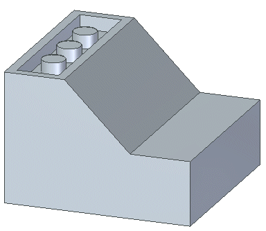
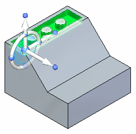
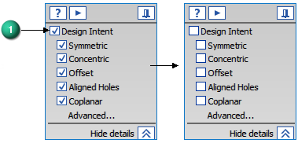
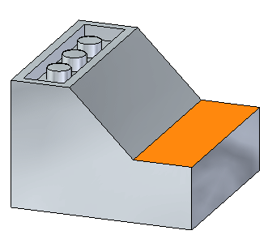
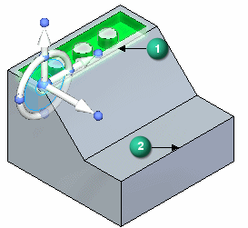
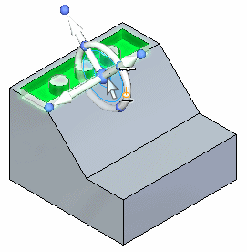
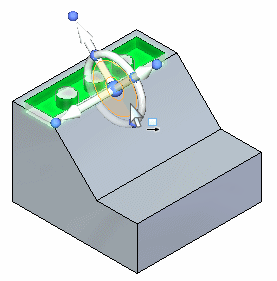
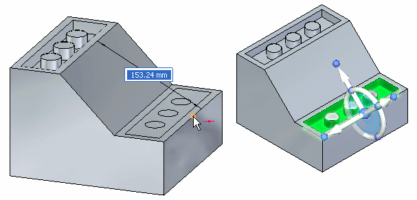
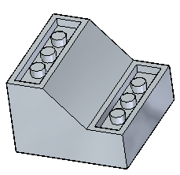

Activity: Copying and attaching a feature (method 2)
This activity has the same goal as method 1, but uses a different approach.
Click here to download the activity file.
If you are using Internet Explorer and a video is not displaying in your training guide, click the Tools tab (or gear icon)→Compatibility View settings, and then clear the selection of Display intranet sites in Compatibility View.
Open copy_b.par.

Select the cutout feature by clicking Cutout1 in PathFinder.

How to use the Design Intent panel is presented in the help topic, Working with geometric relationships. At this time just suspend the Design Intent setting in the Design Intent panel while moving the cutout feature. This ensures no other faces in the model participate in the move.
On the Design Intent panel, uncheck the Design Intent (1) option.

On the command bar, choose the Copy option.
Move the copied feature to the face shown in orange.

In this activity, use the steering wheel tool plane to move the copied feature instead of the axis used in the method 1 activity.
The move is from the midpoint of edge (1) to the midpoint of edge (2).

As you drag the steering wheel origin over an edge, the normal axis aligns with the edge. When the edge midpoint indicator appears, click. Move the steering origin to the edge endpoint.

Click the steering wheel tool plane.

Drag the cursor over the edge shown and click when the midpoint symbol displays. You may have to turn on the midpoint option on command bar.

Press the Escape key to end the move command.
Since this copy operation was accomplished in one movement, the copied feature attaches automatically.

In this activity you learned how to copy a feature and then position the copied feature by moving the steering wheel origin and using the steering wheel plane to define the move vector.
Click the Close button in the upper-right corner of the activity window.